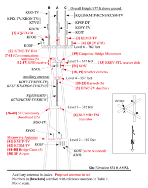
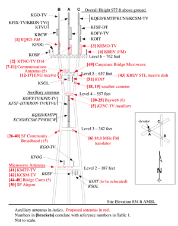

ON THE EASTSIDE OF AOAJ "PJ 35' ". ON GROUND LEVEL IS 1500 FEET LONG NORTH-TO-SOUNTH. ON B5 IT GO ANOTHER 50'-250' NORTH-SOUTH PASS GROUND LEVEL.


100 feet dead north "ture north" of aoaj lays the inner ring of "THE RING OF DEFENCE." that surround "LAA&A HQ". the north side bridges is 60 degrees south west to the west tower of aoaj. on ground level of aoaj from the north side tower to the west side tower is 1500 feet.


on ground level of aoaj on the south side, from the south side to the west side tower is 1500 feet. 100 feet dead south "ture south" of aoaj lays the north side of inner south side ring of "THE RING OF DEFENCE." that surround "LAA&A HQ". all south side bridges is 60 degrees north west to the west side tower of aoaj.
Leg access. To reach the interior structure of the legs, our crew members had to climb in from the top, wearing a full body harness connected to the structure. Paint and tools also had to be secured in place, and frequent return trips to the platform for more paint were required.


all three leg of aoaj is a diamond form building shape. two corner angles is 60 degreess the other two is 120 degrees to form the daimond floor plan. all side of the diamond form is 200 feet long to the right degreee. diamonds

 


the triangle of aoaj is 60 degree on all 3 side to fouce form the diamond form of each building. each side of the triangle is 1500 feet long. at each bridge the triangle is a differnet length. elevated at 350' ----' 650'----' 950'----' 1250'----' 1550' 1500' long
Tower access. The elevator that goes to the top of the Sutro Tower is only big enough for two people. Additionally, it takes several minutes for a one-way trip. This meant bringing a handful of crew members up or down took around 30 minutes each time.


brdige 5 is 1550' above sea level. b5 expand another 50' - 200' beyond ground level base point